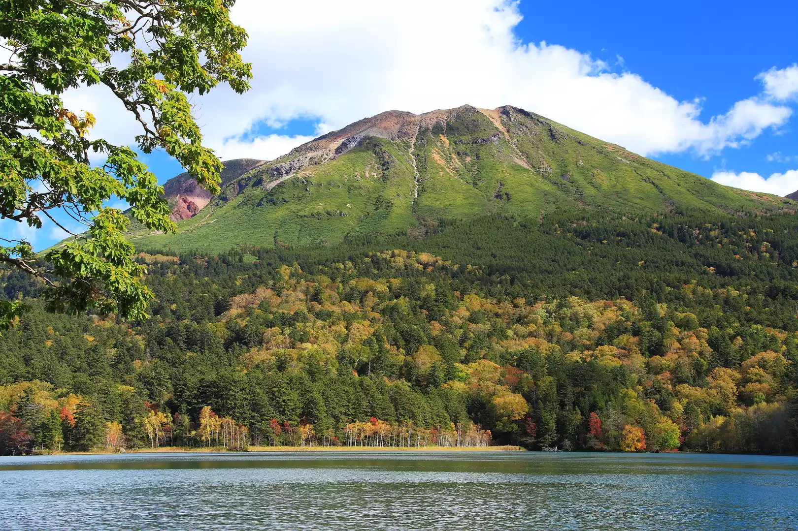

あなたにおすすめの山は...雌阿寒岳です！


- 標高：1499m
- 場所：北海道釧路市と足寄町の境界（阿寒摩周国立公園内）
- 登山時間：登り約2時間30分、下り約1時間45分（登山道は明瞭で整備されているが、ザレ場（滑りやすい火山砂利）があり少し体力と注意力が必要）
- アクセス：車で釧路市内から約2時間で帯広市内から約2時間半、阿寒湖温泉まではバスで行けるが、登山口（オンネトー）までは車推奨
特徴
・山頂付近には噴気孔と火口湖（青沼）があり、火山の生きた姿を体感できる
・特に夏にはメアカンフスマやメアカンキンバイなど、この山にしか見られない固有種も咲く
・同じ百名山でも羊蹄山や十勝岳よりは登りやすく、百名山入門としてちょうどいい難易度
・登山前後に立ち寄れる神秘の湖「オンネトー」は静かで美しく、登山後の癒しにぴったり